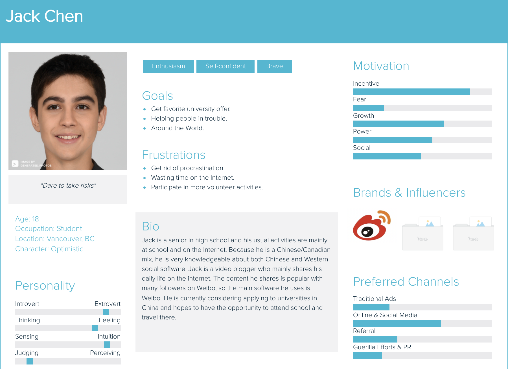
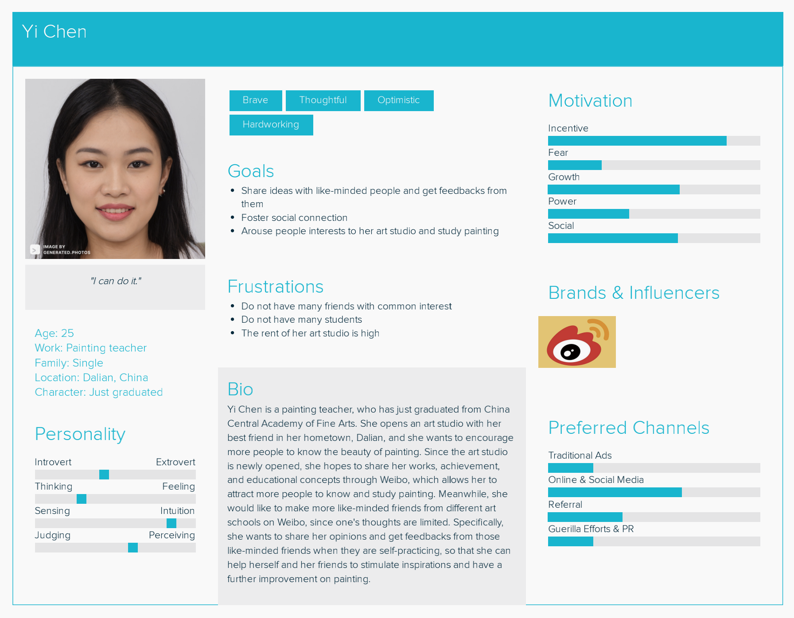

Chapter 5 Weibo
Persona




Demographics
5.0.1 Describe your chosen platform in significant detail, including, as available (Wikipedia may be a good source for some of this info):
Sina Weibo is a Chinese social media site. As a microblogging app that launched on August 14, 2009, it has become one of the largest social media platforms in China. In March 2014, Sina Weibo was spun off as a separate entity simply called “Weibo.” In November 2018 Weibo suspended the registration of minors under 14 years old on Weibo. Besides, Weibo is mainly used as a platform to cultivate user relationships and then share, spread, and receive information. Weibo opened its popularity at the beginning by inviting a large number of celebrities to join. As the user base grew, it continued to invite media professionals, government agencies, NGOs, and corporations to sign up Weibo to post and disseminate information.